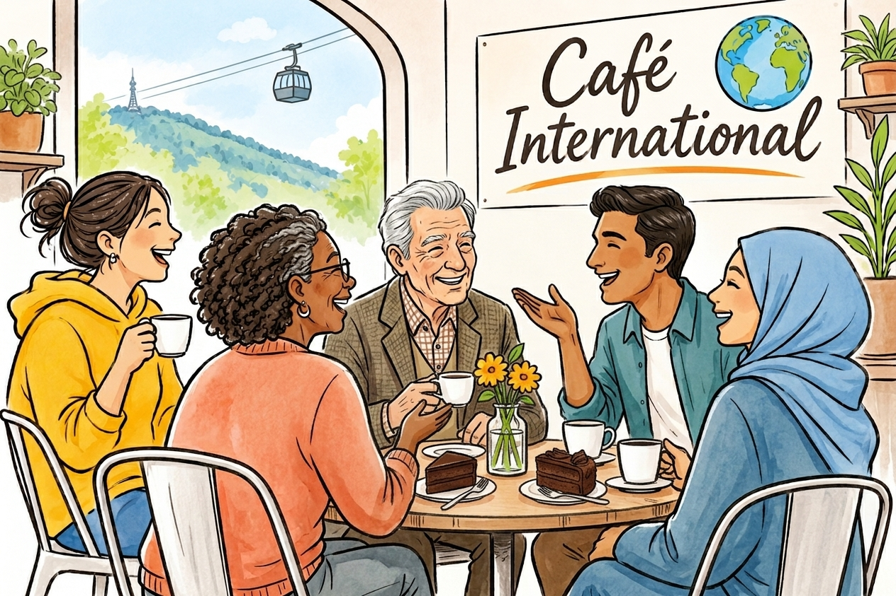

Café International
نجد التواصل. ونشعر بأننا في بيتنا.
- Härzlich willkomme!
- Welcome!
- Bienvenue !
- Benvenuti!
- ¡Bienvenidos!
- Bem-vindos!
- Mirë se vini!
- Dobro došli!
- Добро дошли!
- Hoş geldiniz!
- Добро пожаловать!
- Ласкаво просимо!
- أهلاً وسهلاً!
أهلاً بكم في Café International
في Café International في أدليسفيل يلتقي أهل المنطقة بأشخاص من جميع أنحاء العالم.
مع فنجان قهوة أو شاي يبدأ الحديث بسهولة: عن أحداث العالم وهموم الحياة اليومية الصغيرة، وعن الحياة في سويسرا وفي بلدان ضيوفنا الأصلية.
نرحّب بشكل خاص بكل من وصل حديثًا إلى أدليسفيل، أو يتحدث لغة أخرى، أو يقضي وقتًا طويلًا وحده أو في البيت مع أطفال صغار. هنا تجدون التواصل وتبادل الحديث ومن يُصغي إليكم.
كل شيء مجاني، وتوجد زاوية لعب للأطفال. يسعدنا استقبالكم!
- قهوة وكعك مجانًا
- زاوية لعب للأطفال
- كل خميس رابع · 15:00–17:00بعض الاستثناءات في عام 2027
المواعيد القادمة
يوم الخميس، من 15:00 حتى 17:00 · Ref. Kirchgemeindehaus, Kirchstrasse 2, 8134 Adliswil
تجدون جميع المواعيد في صفحة المواعيد.